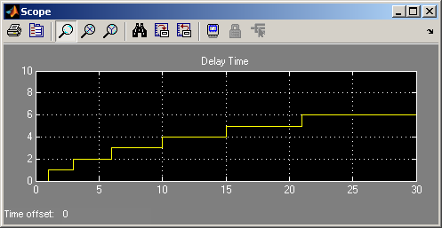

Asynchronous Execution of a Stateflow® Chart
Contents
Overview
This demo shows two alternative methods to execute a Stateflow® chart asynchronously, where a Simulink® signal is used to decide execution times. In this example, the chart computes its own execution times during the simulation. The two approaches are:
- Delaying function calls
- Delaying entities
When using these techniques in your own models, you can choose the technique that you find most natural.
The top-level model shows a Stateflow chart and a subsystem that executes the chart after a certain amount of delay.
The Stateflow chart logic increments the variable delay_time upon each firing, and the value of this variable is used as the delay before the next execution of the chart. When the delay interval exceeds 5, the End state becomes active indicating that the chart will not be executed any more.
Refer to the documentation for instructions on how to configure a Stateflow chart for use with SimEvents®.
Method 1: Delaying Function-Calls
The figure below shows the contents of the Delayed Execution subsystem for the first approach. It shows the use of delayed function calls to execute the Stateflow chart at times determined by the chart itself. The model is available here.
A Function-Call Generator block executes the chart at the start of the simulation. Subsequently, the chart produces the output (delay_time) that determines the next firing time.
A Signal-Based Event to Function-Call Event block converts the signal update of the chart into a function call f1 which is delayed by the value of the block's t signal. This function call is used to execute the Stateflow chart, thus effectively causing a delayed execution.
Method 2: Delaying Entities
The figure below shows the contents of the Delayed Execution subsystem for the second approach. It shows the use of entities to execute the Stateflow chart. The model is available here.
At the start of simulation, the Time-Based Entity Generator block generates the first entity. This entity moves immediately to the Entity-Departure Event to Function-Call Event block which fires a function call that executes the Stateflow chart for the first time. The intergeneration period of this Time-Based Entity Generator block is Inf and hence it does not generate any more entities throughout the simulation.
When time > 0, the chart provides the next execution delay on its first output port. Each time the chart executes, its output signal line updates, and this update event causes the Event-Based Entity Generator block to create a new entity. Each such entity is delayed in the Single Server for a time equal to the delay_time produced by the chart.
Results
A simulation of both models yields the following results.
The spots on the x-axis where the value changes are the instants when the Stateflow chart executes. The values on the y-axis are the delays between successive execution times as computed by the chart, i.e. the values of delay_time. When delay_time exceeds 5, the chart no longer gets executed and instead maintains its state.